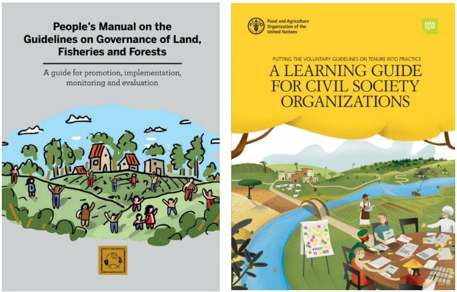

The Voluntary Guidelines are being recognized and used as an important tool to support the struggles of social movements and indigenous peoples worldwide. The organizations participating in the Land and Territory Working Group of the IPC (representing different constituencies, including peasants, indigenous peoples, fishers, pastoralists), have taken on the responsibility of supporting communities and organizations in getting familiar with the Voluntary Guidelines.
As a first step, the Working Group developed the “People’s Manual” to support capacity-building on the Voluntary Guidelines.
The second step has been the learning guide “Putting the Voluntary Guidelines on Tenure into Practice: A Learning Guide for Civil Society Organizations”. The primary users of this guide are CSO trainers and facilitators interested in organizing and delivering training on the Voluntary Guidelines. The eventual beneficiaries are the participants of such training, who can learn how to apply the Voluntary Guidelines to actual tenure governance challenges.
The learning guide was tested in 2015 by national counter parts in several countries in Asia, Africa and Latin America and during a stocktaking exercise. The current version of the learning guide is the result of this testing process.
This online learning guide represents the third step to support Civil Society Organizations in their capacity-building efforts on the Voluntary Guidelines. It aims to facilitate the uptake of the learning guide and to make it widely available and easily accessible through a range of devices, from desktop computers to tablets and smartphones. This will support trainers in their efforts to enhance capacities to promote the responsible governance of tenure and the realization of the human rights of peasants, small-scale fishers, pastoralists, indigenous peoples, the landless, rural workers, youth, men and women.